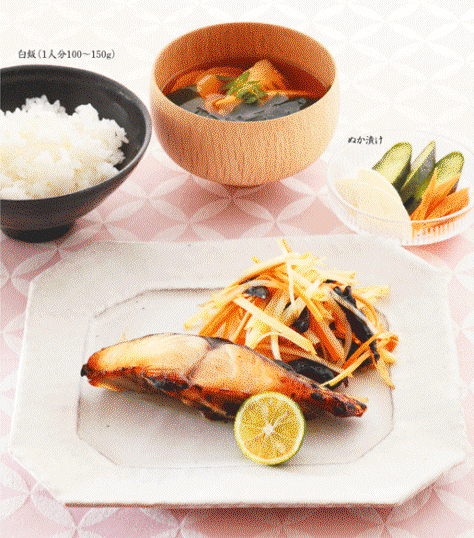
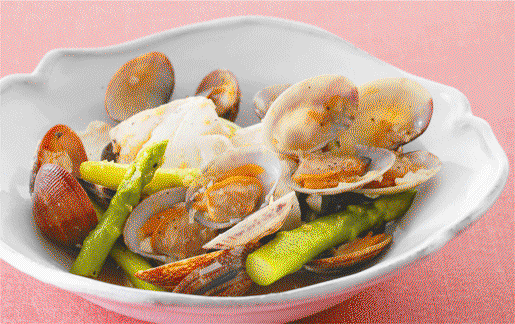
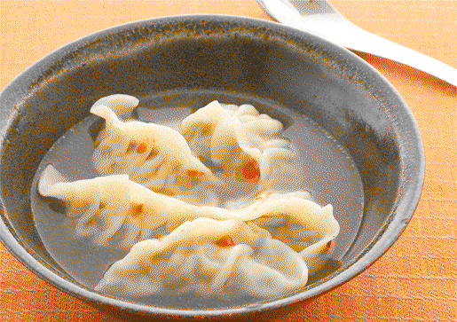

| 若返り食堂 | |
| 南雲 吉則 | |
| PHP研究所 (2012) | |

50歳を超えても30代に見える人の食の習慣術
若返り食堂
南雲吉則
＋菜の花のしらす和え＋はまぐりのお吸い物
＋にんじんと新じゃがのプルーン和え＋若竹汁
夏の献立
＋かぼちゃの煮物＋桜えび入りいり豆腐
＋焼きトウモロコシ＋しじみ汁
秋の献立
＋なすのリャンバン＋豆腐と菊花のみそ汁
＋お赤飯＋焼き大学いも＋まいたけと春菊のすまし汁
冬の献立
＋大根の皮のきんぴら＋大根の葉のみそ汁
＋ほうれん草のおひたし＋根っこのからし和え
［南雲流朝食］
［南雲流昼食］
Dr.ナグモのアドバイス
この本の材料・つくり方の表示について
・小さじは５、大さじは15、1カップは200です。
・電子レンジの加熱時間は、600Wの場合の目安です。
若返るための９つの食べ方
私は10年以上前に食生活をかえました。それからというもの、体重が15kgも減り、肌がつやつやになり、実年齢より20歳ほど若く見えるようになりました。
その秘訣をお教えしましょう。
１
腹六分目を心がけよう
人類が飢餓という問題に直面していた時代は長く、それに対応する生命力が必要でした。その力は「延命遺伝子」に宿されていますが、これは飢餓状態がスイッチとなって働きます。腹六分目は、ちょっとおなかがすいている状態。この"ちょい飢餓状態"で延命遺伝子が活性化され、長寿や若返りにつながるのです。腹六分目のコツは、一汁一菜。さらに、子ども用の茶わんなど小さめの器を利用するとよいでしょう。
２
魚は骨ごと、腹ごと、頭ごと食べる
一汁一菜にして品数を減らしても、もちろん栄養はバランスよくとらなければなりません。ですから、魚の身はもちろん、骨も内臓も頭も１尾丸ごときれいに食べてください。これは「完全栄養」といい、魚を丸ごと食べることで、私たちの体を構成するすべての栄養をバランスよくいただくことができるのです。まぐろのトロが好きな人も多いでしょうが、それは偏った部分栄養。小魚やいかを丸ごと食べて、どんどん若返りましょう。
３
野菜は葉ごと皮ごと根っこごと食べる
葉には、光合成を行うために、ビタミンやカリウムがたくさん含まれています。皮は、いわば"鎧"。酸化から身を守るための抗酸化作用や、鳥につつかれたところを修復する創傷治癒作用などがあります。根は栄養を貯蔵している部分なので、糖分やでんぷんが豊富。葉や皮も残さず食べて、自然の恵みを余すところなくいただきましょう。
４
穀物は全粒で。米なら玄米、パンは茶色いものを
精製された真っ白なお米や小麦粉......見た目はきれいですが、実はわざわざ栄養を削ぎ落としているのです。穀物の表面にも、食物繊維やビタミンなどがたくさん含まれています。特に主食は毎食のものであるだけに、玄米や全粒粉を使ったパンに切り替えて、完全栄養をとりましょう。切り替え方は簡単。お米やパンを選ぶときに、「茶色」のものを手に取ればよいのです。
５
塩分、糖分、脂分をとりすぎない
これらをとりすぎると、高血圧や糖尿病、脂質異常症やメタボリックシンドロームを招くことになります。新鮮な野菜を丸ごと食べてみてください。その味わいに調味料が不要なことに気がつくでしょう。特に、旬の食材は味が濃く、栄養も満点です。動物だって、獲物や草などに塩やドレッシングをかけないですよね。本書では塩、こしょうで味を調えると書いてあるレシピがありますが、塩はできるだけ控えめに。
６
豆は毒素を十分に抜いてから
小豆を調理するとき、まずひと晩水につけ、その水を捨てて、煮てからも水を２度ほど入れ替えますね。これは豆に含まれるレクチンなどの毒素を出す作業で、これをしないと、おなかを壊してしまいます。豆は種であり、食べられると種の存続が危ぶまれるため、毒素があるのです。豆の豊富な栄養をいただくには、きちんと毒抜きをすることがポイントです。
７
「芽」や「魚卵」には気をつけて
芽や魚卵には、これからぐんぐん成長するための栄養がたっぷり。ただし、芽や魚卵をとりすぎると、痛風になることも知っておいてください。芽や魚卵には「核たんぱく（プリン体）」がたくさん含まれています。プリン体は体内で尿酸となり、それが結晶化して痛風が起きるのです。卵の数とプリン体の量は比例するため、たらこや明太子、キャビアなど数の多い魚卵は量や食べる回数に注意しましょう。
８
室温で固まる脂のものは避ける
牛や豚などの料理の脂は、熱いときはトロトロですが、室温では白く固まりますね。これは、私たちの血管の中でも固まる可能性があるということ。牛や豚などの室温で固まる脂をとりすぎると、血液がドロドロになり、自ら心臓病などを招いていることになるのです。ちなみに、魚の煮汁も冷めたらプルプルと固まりますが、これは魚に含まれるゼラチンが溶け出しているためで、脂が固まっているわけではありません。
９
病気のときは１日３食しっかり食べる
病気のときは一汁一菜を１日３食しっかりと食べて、元気になることが先決。また、コレステロールが多く含まれている肉や卵なども積極的に食べましょう。ふだんは生活習慣病予防などの観点から控えたほうがよいのですが、コレステロールは体内で細胞膜の材料になるなどの役割があり、病気のときには欠かせない成分なのです。
次のページから、この食生活を具体化したレシピを紹介します。ぜひみなさんも実践してみてください。きっと今よりも、若々しくなるはずです！
南雲吉則
アスパラガスの豚巻きフライ定食
＋菜の花のしらす和え＋はまぐりのお吸い物
アスパラガス、菜の花、しらす、はまぐりと、春の旬の食材はバラエティにとんでいます。
それは、バランスのとれた栄養をいただくことです。
アスパラガスの豚巻きフライ
●材料（２人分）
プロセスチーズ......20g
グリーンアスパラガス......6本（90g）
豚ロース薄切り肉......12枚（200g）
塩・こしょう......各少々
小麦粉・溶き卵・パン粉......各適量
揚げ油......適量
ミニトマト......6個（60g）
●つくり方
１ チーズは1角に切り、アスパラガスは皮を下から半分ほどピーラーでむいて3等分に切り、ゆでる。
２ 豚肉を2枚ひと組にして並べ、塩、こしょうをふり、を6等分して手前にのせ、クルクルと巻いて包む。
３ 小麦粉、溶き卵、パン粉の順に衣をつけ、揚げ油を170℃に熱し、きつね色になるまで揚げ、ミニトマトを添える。
菜の花のしらす和え
●材料（２人分）
菜の花......1束（160g）
だし汁......大さじ3
しょうゆ......大さじ1
みりん......小さじ1
しらす干し......大さじ2
●つくり方
１ 菜の花は水に10～15分ほどつけてパリッとさせて洗い、茎と葉に分けて茎から先にゆでる。
２ 固めにゆでて冷水にとって水気を絞り、3長さに切ってもう一度しっかりと水気を絞り、だし汁としょうゆ、みりん、しらすを混ぜて浸しておく。
３ 軽く汁気を切って器に盛る。
菜の花としらすでビタミン、ミネラル満点
春の訪れを教えてくれる菜の花は、緑黄色野菜のひとつでビタミンCやβ‐カロテンなどがたっぷりとれます。また、しらすも春が旬。カルシウムや必須ミネラルのひとつであるカリウムが豊富で、丸ごと食べられる完全栄養です。
はまぐりのお吸い物
●材料（２人分）
はまぐり......200g
うど......20g
わかめ（生）......20g
水......1・1/2カップ
昆布......５角１枚
酒......大さじ1
薄口しょうゆ......小さじ1
塩......少々
木の芽......適宜
●つくり方
１ はまぐりは３％の塩水に浸して砂抜きし、殻をこすってよく洗う。
２ うどは皮をむいて薄い短冊形に切り、わかめはサッと水洗いする。
３ 鍋に水と昆布、のはまぐりを入れて火にかけ、煮立ったら昆布を取り出す。酒を加えて、はまぐりの口が開くまでアクを取りながら煮る。薄口しょうゆ、塩で薄めに味を調え、うどとわかめを加えて温める。
４ お椀にはまぐりとうど、わかめを入れ、汁をはり、好みで木の芽をあしらう。
＋にんじんと新じゃがのプルーン和え＋若竹汁
さわらは漢字で書くと「鰆」。
文字通り春の魚で、DHAやEPAが豊富です。
たけのこも春が旬です。今回は汁の具に使いましたが、ご飯と炊いたり、煮たり焼いたりしても楽しめます。
生のたけのこを使うときはしっかりアク抜きをしましょう。

さわらのみそ漬け
●材料（２人分）
さわら（切り身）......2切れ（160g）
白みそ......100g
甘酒（濃縮）......大さじ1・1/2
みりん......大さじ1/2
すだち......適宜
●つくり方
１ 白みそに甘酒とみりんを加えて、なめらかになるように混ぜる。さわらはキッチンペーパーなどで余分な水気をしっかりとふき取る。
２ ラップを広げてのみそを少し塗り広げ、その上にさわらをのせる。さわらの表面にもみそを塗り、みそが満遍なくつくようにしてラップでぴっちりと包み、半日～1日漬け込む（このまま、冷凍保存も可）。
３ フライパンにオーブンペーパーを敷き、ラップをはずしてみそをふき取ったさわらを並べ入れ、弱めの中火で焼く。焼き色がついたら裏に返して火が通るまで焼く（グリルで焼く場合は、焦げないように注意）。
４ すだちを添える。
にんじんと新じゃがのプルーン和え
●材料（２人分）
にんじん......1/3本（60g）
新じゃがいも......1個（100g）
プルーン（乾燥）......3個
オリーブ油......小さじ2
塩......小さじ1/4
こしょう......少々
●つくり方
１ にんじんとじゃがいもは皮ごとせん切りにしてサッとゆでる。プルーンは細切りにする。
２ ボウルにオリーブ油と塩、こしょうを入れ、を入れてなじむまでよく混ぜる。
じゃがいももさわらも皮ごと食べる！
じゃがいもの旬は春と秋の２度あり、３～５月ごろに出回るものを新じゃがいもと呼びます。野菜や果物の皮には、抗酸化作用のあるポリフェノールが含まれているため、皮ごと食べます。特に新じゃがは皮が薄いため、丸ごと食べるのに最適です。
青魚の皮にも抗酸化作用のあるDHAやEPAが含まれています。皮は残さず食べましょう。
若竹汁
●材料（２人分）
たけのこ（水煮）......100g
わかめ（生）......30g
だし汁......2カップ
酒......大さじ1
塩......小さじ1/4
しょうゆ......小さじ1弱
木の芽......適宜
●つくり方
１ たけのこは短冊切りに、わかめは水洗いをして食べやすい大きさに切り、水気を絞る。
２ 鍋にだし汁を入れて煮立ったら、酒、塩とたけのこを加えてひと煮し、しょうゆを加えて味を調え、わかめを加えて1～2分温める。
３ お椀に盛り、木の芽をあしらう。

●材料（２人分）
あさり（殻付き）......200g
グリーンアスパラガス...6本（90g）
絹ごし豆腐......2/3丁（200g）
にんにく（みじん切り）......1かけ
しょうが（みじん切り）......1かけ
長ねぎ（みじん切り）...5（20g）
オリーブ油......大さじ1/2
白ワイン......大さじ2
ナムプラー（ない場合はしょうゆ）......大さじ1強
粗挽きこしょう......少々
●つくり方
１ あさりは3%の塩水に浸して砂を抜き、殻をこすり合わせて洗い、水気を切る。アスパラガスは下の硬い部分をピーラーでむいて3長さの斜めに切る。豆腐は6等分に切る。
２ フライパンにオリーブ油とにんにく、しょうが、ねぎを入れて火にかけ、香りがたったらのあさりを加えて炒める。
３ アスパラも加えてフライパンをゆすりながら炒めたら、白ワインをふり入れ、煮立ったら豆腐を入れ、ふたをして蒸らしながら火を通す。あさりの口が開いたら、ナムプラーを加え、こしょうをふり味を調えて火を止める。
●材料（２人分）
鶏ひき肉......120g
れんこん......40g
片栗粉......小さじ2
しょうが汁......小さじ1
たけのこ（水煮）......150g
そら豆（皮付き）......100g
しょうゆ・みりん......各大さじ1/2
＜煮汁＞
だし汁......1・1/2カップ
みりん......大さじ1/2
酒......小さじ1
薄口しょうゆ......小さじ1
塩......少々
七味唐辛子......適宜
●つくり方
１ ボウルに鶏ひき肉、すりおろしたれんこん、片栗粉、しょうが汁を入れてよく練り混ぜ、鶏つくねをつくる。
２ 鍋に煮汁の材料を入れて煮立て、鶏つくねをスプーンですくって入れる。つくねに火が通ったら取り出し、アクを取る。
３ たけのこは穂先はくし形に、下は１厚さのいちょう切りにする。
４ にたけのこを入れて落としぶたをし、弱火で約10分煮る。しょうゆとみりんを加え、そら豆を皮付きのまま加えて、さらに落としぶたをして弱火で10分煮る。
５ 鶏つくねを戻し入れてひと煮たちしたら器に盛り、好みで七味唐辛子をふる。
冷や汁定食
＋かぼちゃの煮物＋桜えび入りいり豆腐
冷や汁は、夏野菜がたっぷり入った夏の定番。
食欲が落ちる夏でも、さらさらと食べられます。
玄米ご飯にかけて食べてもよいでしょう。
冷や汁
●材料（２人分）
あじ（干物）......1枚
きゅうり......1本（100g）
みょうが......2個（30g）
オクラ......3本（20g）
青じそ......3枚
白いりごま......大さじ3
みそ......大さじ3
だし汁（冷たいもの）......2カップ
●つくり方
１ あじの干物は焼いて、小骨を取り除いて身をほぐす。
２ きゅうりとみょうがは小口切りにし、オクラはサッとゆでてから小口切りに。青じそはせん切りにする。
３ すり鉢にごまを入れて油がにじみ出てくるまですり、とみそを加えてすり混ぜ、冷たいだし汁を注いでのばす。きゅうりとオクラを加えて混ぜ、冷蔵庫で食べる直前まで冷やす。
４ 器に盛り、みょうがとしそをのせる。
きゅうりのアクはひと手間かけて取り除く！
きゅうりの端を切り落とし、あら塩でこするとヌルヌルしたものが出てきます。この粘液の正体は蓚酸という、野菜に含まれる"アク"です。蓚酸を含んだままの野菜を食べると、おなかを壊してしまうことも。ちょっと手間をかけるだけで簡単に蓚酸が取り除け、安全に生野菜が食べられます。
かぼちゃの煮物
●材料（２人分）
かぼちゃ......200g
はちみつ......小さじ2
しょうゆ......大さじ1/2
水......1/3カップ
●つくり方
１ かぼちゃはタネとワタを取り、皮付きのままひと口大に切る（皮に栄養がある）。
２ 鍋にと水、はちみつを入れて火にかける。煮立ったら弱めの中火にし、しょうゆを加えて落としぶたをする。かぼちゃに火が通り、汁気がなくなるまで煮る。
桜えび入りいり豆腐
●材料（２人分）
木綿豆腐......1/2丁（150g）
しいたけ......1枚（15g）
絹さや......6枚（12g）
長ねぎ......1/4本（15g）
桜えび（乾）......8ｇ
卵......1個
ごま油......大さじ1/2
砂糖......大さじ1・1/2
しょうゆ......小さじ2
塩......小さじ1/3
●つくり方
１ 豆腐はキッチンペーパーで包み、耐熱皿にのせて電子レンジで3分加熱して水気を切る。
２ しいたけは薄切りに、絹さやはサッとゆでてから細切りにする。ねぎはみじん切りにする。
３ フライパンにごま油とねぎを入れて炒め、しいたけと桜えびを加えて炒める。
４ 豆腐を崩しながら加え、を加えて汁気がなくなるまで炒める。溶いた卵を加えて混ぜて火を通し、最後に絹さやを加えて混ぜ、器に盛る。
＋焼きトウモロコシ＋しじみ汁
ゴーヤは、疲労回復効果があるため、夏の疲れた体にピッタリの食材です。
しじみは、「土用しじみは腹薬」といわれるように、昔から夏バテに効果があることで知られています。
体力が落ちる夏には、滋養のあるものを食べようというわけです。
ゴーヤチャンプルー
●材料（２人分）
木綿豆腐......1/2丁（150g）
ゴーヤ......1/2本（100g）
塩......適量
豚こま切れ......100g
卵......1個
ごま油......大さじ1/2
にんにく（みじん切り）......1/2かけ
砂糖......小さじ1
しょうゆ......小さじ2
塩・こしょう......各少々
●つくり方
１ 豆腐は厚手のキッチンペーパーで包み、耐熱皿にのせて電子レンジで4分加熱して水気を切る。
２ ゴーヤは縦半分に切り、タネとワタを十分に取り、5～7幅の薄切りにし、塩をよくまぶしてから水洗いしてアクを取る。
３ フライパンにごま油とにんにくを入れて火にかけ、香りがたったら豆腐を手で大きめに崩して並べ入れて表面に焼き色をつけながら焼く。豚肉を加えて炒め、色が変わったら、ゴーヤを加えてさらに炒め、塩、こしょう、砂糖、しょうゆで調味する。
４ 溶き卵を回し入れ、半熟状になったら器に盛る。
ゴーヤで夏のダメージを和らげよう
ゴーヤの苦みの成分であるモモルデシンには、胃の消化を助けたり、夏バテから早く回復させる働きがあります。また、ビタミンCも多く含まれており、日焼けによるシミの形成を防ぎます。まさに、ゴーヤは夏にうってつけの野菜といえるでしょう。
焼きトウモロコシ
●材料（２人分）
トウモロコシ......2/3本（240g）
しょうゆ......大さじ1・1/2
はちみつ......小さじ2
砂糖......小さじ1
バター......5g
●つくり方
１ トウモロコシは4等分に切る。しょうゆとはちみつ、砂糖を混ぜてタレをつくる。
２ フライパンにバターを入れて温めたら、トウモロコシを入れてころがしながら焼く。薄く色づいてきたらタレの材料を半分ほど入れて、汁気がなくなるまで、ころがしながら焼く。
３ ふたをして蒸らすようにして火を通し、最後に残りのタレも加え、汁気がなくなるまで弱めの中火でころがしながら焼く。
しじみ汁
●材料（２人分）
しじみ（殻付き）......150g
昆布......5角1枚
水......2カップ
みそ......大さじ1・1/2
万能ねぎ......適宜
●つくり方
１ しじみは３％の塩水に浸して砂抜きし、よく洗ってざるにあげる。
２ 鍋に昆布とのしじみ、水を入れて火にかける。煮立ち、貝の口が開いたら昆布を取り出してアクを取り、みそを溶き入れる。刻んだ万能ねぎをちらして火を止める。

新しょうが......5g
しょうゆ......小さじ2～3
青唐辛子......3～4本
サンチュ......4枚
ご飯......200g
青じそ（またはゴマの葉）......4枚
にんにく（薄切り）......1かけ
コチュジャン（マクジャンがあるとよい）......適宜
●つくり方
１ あじは3枚におろして小骨を取り、皮をはいで7～8幅に切り、みじん切りにした新しょうが、しょうゆとともに和え、混ぜておく。
２ 青唐辛子は斜め薄切りにする。
３ サンチュの上にご飯をのせ、その上に青じそ、をのせる。にんにくの薄切り、青唐辛子をさらにのせ、好みでコチュジャンをのせて巻いて食べる。
しょうが汁・酒......各小さじ2
片栗粉......大さじ1
キャベツ......2枚（100g）
トマト......1/2個（100g）
オクラ......4本（約30g）
ヤングコーン......4本（40g）
枝豆（むき）......1/2カップ
ごま油......大さじ1
しょうが（みじん切り）......1かけ
＜あわせ調味料＞
水......1/2カップ
みそ......大さじ1・1/2
片栗粉......小さじ2
砂糖......大さじ1/2
しょうゆ......小さじ1弱
●つくり方
１ いかは足とワタ、軟骨を取り除いて輪切りにし、足は食べやすい大きさに切り分け、しょうが汁、酒、片栗粉をまぶしておく。キャベツはザク切りに、トマトはくし形に切る。
２ オクラとヤングコーンはゆでて斜め2等分に切り、同じ湯で、のいかを入れてサッとゆでる。
３ フライパンにごま油としょうがを入れて香りがたったらキャベツ、トマトを加えて炒める。と枝豆も加え、あわせ調味料を加えてつやが出て食材に火が通るまで強めの中火で炒める。
さんまのピリ辛焼き定食
＋なすのリャンバン＋豆腐と菊花のみそ汁
さんま、なす、菊の花と味だけでなく、色でも秋が楽しめます。また、さんまは、皮ごと食べられる食材です。陸と海からの命をしっかりいただき、活力をつけましょう。
さんまのピリ辛焼き
●材料（２人分）
さんま......2尾（300g）
れんこん......80g
しいたけ......大2枚（30g）
＜あわせ調味料＞
しょうゆ......大さじ2
酒・みりん......各大さじ1/2
砂糖......小さじ1/2
一味唐辛子......小さじ2
●つくり方
１ さんまは斜め半分に切り、余分な水気をふき取っておく。れんこんは皮付きのまま5～6厚さの半月形に切り、しいたけは石付きを取り、半分に切る。
２ あわせ調味料の材料を混ぜてタレをつくってバットに入れる。さんまとれんこんを入れてときどき裏に返しながら10～15分漬け込む。
３ さんまの汁気を切り、れんこんとしいたけも一緒にのせてグリルで両面をこんがりと焼く。
豆腐と菊花のみそ汁
●材料（２人分）
菊花......2個
絹ごし豆腐......1/4丁（75g）
だし汁......1・1/2カップ
みそ......大さじ1強
●つくり方
１ 菊花は花びらを摘む。豆腐はさいの目に切る。
２ 鍋にだし汁を入れて火にかけ、煮立ったら豆腐を入れる。再度温まったらみそを溶き入れて、フツフツと沸いてきたら、菊花をちらして火を止める。
なすのリャンバン
●材料（２人分）
なす......3本（240g）
しょうゆ......大さじ1
酢......大さじ1/2
砂糖・酒・ごま油......各小さじ1
豆板醤......小さじ1/3
しょうが（おろし）......1/2かけ
みょうが......2個（30g）
●つくり方
１ なすはヘタを取ってラップをし、電子レンジで3分加熱し、粗熱が取れてきたら細くさいて冷蔵庫で冷やす。
２ ボウルにを入れてよく混ぜる。
３ 器にを盛り、小口切りにしたみょうがをのせ、をかける。
＋お赤飯＋焼き大学いも＋まいたけと春菊のすまし汁
きのこ類はどれもローカロリーで、さまざまな働きを持っているので、秋には頻繁に使いたい食材です。
いもやえびとともに、秋の恵みをいただきましょう。
れんこんのえび焼き
●材料（２人分）
えび（むき）......120g
長ねぎ（みじん切り）......1/4本（15g）
しょうが汁......小さじ1
塩......少々
しょうゆ......小さじ1/2
片栗粉......適量
れんこん......150g
片栗粉......大さじ1
ごま油......大さじ1/2
すだち......適宜
●つくり方
１ えびは包丁でたたき、ねぎ、しょうが汁、塩、しょうゆ、片栗粉も加えて包丁でたたきながら粘りが出る程度まで混ぜる。
２ れんこんは5厚さの輪切りにし、並べて片栗粉をまぶし、れんこんの半分にを塗り、残りのれんこんをのせてはさむ。
３ フライパンにごま油を熱し、を並べ入れて焼き色がついたら、裏に返してふたをする。蒸らしながら火を通し、ふたを開けて汁気が飛ぶまで焼く。器に盛り、すだちを添える。
焼き大学いも
●材料（２人分）
さつまいも......1/2本（100g）
ごま油......大さじ1/2
きび砂糖......大さじ1/2
しょうゆ......小さじ1
黒いりごま......小さじ1
●つくり方
１ さつまいもはよく洗って、皮ごと細長い乱切りにする。すぐに水につけ、にごったら水をかえ、５分ほどさらしてざるにあげ、水気を切る。
２ フライパンにごま油をひき、のさつまいもを重ならないように並べ、砂糖をふり入れてふたをし、火にかける。
３ さつまいもに火が通るまで蒸し焼きにしたら、しょうゆを加えて焼き色がつくまでかき混ぜながら炒め、黒ごまをふる。
さつまいもで酸化による老化現象をストップ！
さつまいもの主成分はでんぷんですが、ビタミンやC、Eなども多く含んでいます。ビタミンCとEは抗酸化ビタミンで、これらは助け合って抗酸化作用を持続させるため、さつまいもはアンチエイジングにピッタリの食材です。もちろん、皮ごと食べましょう。
まいたけと春菊のすまし汁
●材料（２人分）
まいたけ......1/3パック（35g）
春菊......1枝（10g）
だし汁......1・1/2カップ
塩......小さじ1/3
しょうゆ......小さじ1/2
●つくり方
１ まいたけは食べやすい大きさにほぐし、春菊は葉を摘み取る。
２ 鍋にだし汁を入れて火にかけ、煮立ったらまいたけを加えて3～4分煮る。塩、しょうゆを加えて味を調え、春菊を入れて火を止める。
お赤飯
●材料（5～6人分）
もち米......3合
小豆......70g（米の10～20%）
塩......小さじ1/2
●つくり方
１ 小豆は水に半日浸し、その水は捨てる。4倍量の水を加えて強火にかけ、ひと煮立ちしたらゆで汁を捨てて、アクを抜く。再び4倍量の水を加え、沸騰したら差し水を1/2カップほど加え、弱火で25～30分煮る。
２ 小豆は取り出して、乾かないように濡れ布巾をかぶせておく。ゆで汁はこして、お玉などですくってボウルなどに落とし、色出しして冷ます。冷めたら、洗って水気を切ったもち米を入れてひと晩おく。
３ もち米の水気を切る。つけ汁は残しておく。このもち米に小豆を混ぜ、蒸し器に平らに入れて、強火で20分蒸す。
４ 残したつけ汁を3/4カップほど取って、塩を加えて混ぜておく。
５ 蒸し上がったもち米をボウルなどに移し、を回しかけて全体に混ぜ、再び蒸し器に戻して強火で約20分蒸す。
●材料（２人分）
さんま......2尾（300g）
春菊......1/2束（100g）
長ねぎ......1本（60g）
キムチ......50g
ごま油......大さじ1/2
しょうが・にんにく（みじん切り）......各1/2かけ
水......1カップ
酒......大さじ1
コチュジャン......大さじ1
みりん......大さじ1/2
しょうゆ......小さじ1
菊花......適量
●つくり方
１ さんまは頭と尾を切り落とし、内臓を取って塩水（分量外）で洗い、しっかりと水気をふく。春菊は根元の硬い部分を切り、長さを3等分にする。ねぎは斜めに切る。
２ 鍋にごま油としょうが、にんにくを入れて火にかけ、香りがたったらキムチを加えて炒め、水とさんまを入れて煮る。
３ 煮立ったらアクを取り、酒、コチュジャン、みりん、しょうゆ、ねぎを加えて落としぶたをして約10分煮る。
４ 春菊を加えてひと煮立ちしたら火を止め、器に盛り、菊花を散らす。
●材料（２人分）
しいたけ......3枚（45g）
まいたけ......1パック（100g）
しめじ......1パック（100g）
えのきたけ......1/2袋（50g）
鶏手羽中......4本（100g）
しょうが（薄切り）......1かけ
水......3カップ
湯葉（乾燥）......10g
酒......大さじ2
みりん......大さじ2
しょうゆ......小さじ1
塩......小さじ1～2
一味唐辛子......適宜
●つくり方
１ しいたけは薄切りに、まいたけとしめじは食べやすい大きさにほぐし、えのきたけは半分に切ってほぐす。
２ 鍋にしょうがと鶏肉、水とを入れて火にかけ、沸騰したら中火で10～15分煮る。きのこ類と湯葉を加えてさらに5～10分煮る。
３ 器に盛り、好みで一味唐辛子をふる。
ふろふき大根の肉みそかけ定食
＋大根の皮のきんぴら＋大根の葉のみそ汁
大根は、「根ごと皮ごと葉っぱごと」食べられる完全栄養食材。冬は大根づくしの献立がおすすめです。
特に大根の葉は栄養価が高いので、捨てずに料理に使いましょう。
ふろふき大根の肉みそかけ
●材料（２人分）
大根......200g
米......大さじ2
昆布......5角1枚
塩......小さじ1/5
豚ひき肉......80g
長ねぎ（みじん切り）......1/4本（15g）
ごま油......小さじ1
＜あわせ調味料＞
赤みそ（テンメンジャンでも可）......大さじ1
砂糖......小さじ2
みりん......小さじ1
酒・しょうゆ......各小さじ1
水......1/3カップ
片栗粉......小さじ1
●つくり方
１ 大根は皮をむき（皮はとっておく）、3厚さの輪切りにし、鍋に並べる。米をお茶パックなどに入れ、かぶる程度の水を加え、弱めの中火にかける（米のとぎ汁を加えてもOK）。
２ 沸騰したら火を弱めにして、さらに30～40分煮たら火からおろし、水でサッと洗う。
３ 鍋に昆布を敷き、再び大根を並べ、水をひたひたになる程度に入れ、塩を加えて中火で15～20分煮る。
４ フライパンにごま油とねぎを入れて火にかけ、香りがたったら豚ひき肉を入れて色が変わるまで炒める。あわせ調味料を入れて煮込み、片栗粉を倍量の水（分量外）で溶きのばし入れてとろみをつけ、器に盛ったふろふき大根にかける。
大根を水から煮ることが、おいしさの秘訣
ふろふき大根は、なぜ水から煮るのかご存じですか？ 大根の根の部分にはでんぷんが含まれていますが、でんぷんは同じ大根に含まれる酵素のアミラーゼで分解しないと、糖として活用できません。熱湯に大根を入れると、でんぶんを分解する前にアミラーゼが壊れてしまいます。そのため、水からコトコト煮るのが正解なのです。
大根の皮のきんぴら
●材料（２人分）
大根の皮......ふろふき大根の残り
赤唐辛子（輪切り）......1/2本分
ごま油......小さじ1
しょうゆ......小さじ2
酒・みりん......各大さじ1/2
白いりごま......適量
●つくり方
１ 大根の皮はせん切りにする。
２ フライパンにごま油と赤唐辛子を入れて火にかけ、香りがたったらを入れてしんなりとするまで炒める。
３ を加えて汁気がなくなるまで炒め煮にし、白ごまをふる。のかわりにつゆの素（市販／ストレート）大さじ1・1/2を加えてもよい。
大根の葉のみそ汁
●材料（２人分）
絹ごし豆腐......1/4丁（75g）
大根の葉......1本分（柔らかい部分）
だし汁......1・1/2カップ
みそ......大さじ1・1/2～2
●つくり方
１ 鍋にだし汁を入れて煮立ったら、さいの目に切った豆腐とザク切りにした大根の葉を入れる。
２ 再度温まってきたら、みそを溶き入れて火を止める。
＋ほうれん草のおひたし＋根っこのからし和え
冬のぶりは「寒ぶり」と呼ばれ、脂がのってよりおいしくなっています。
ほうれん草は冬が旬で、ビタミンCの含有量が高くなります。またぶりと一緒に食べることで、コラーゲンの合成を促します。
ぶり鍋
●材料（２人分）
ぶり......2切れ（120g）
しょうが汁......小さじ1
酒......小さじ2
長ねぎ......1本（60g）
まいたけ......1パック（100g）
にんじん......1/3本（60g）
水菜......1/2束（75g）
だし汁......3カップ
しょうゆ・みりん......各大さじ2・1/2
酒......1/4カップ
●つくり方
１ ぶりはそぎ切りにし、しょうが汁と酒に漬けて約10分おき、熱湯をかけて霜降りにする。
２ ねぎは斜め薄切りに、まいたけは小房にほぐし、にんじんはピーラーで薄切りにする。水菜は食べやすい長さに切る。
３ 鍋にだし汁としょうゆ、みりん、酒を入れて火にかけ、煮立ったらとを入れる。火が通り、煮えたものから食べる。
ほうれん草のおひたし
●材料（２人分）
ほうれん草......1束（200g）
だし汁......1/2カップ
みりん......大さじ1/2
しょうゆ......大さじ1/2
かつお節......適量
●つくり方
１ ほうれん草は根の部分を2～3ほど切り落とす（根はからし和え用にとっておく）。ひと塩した熱湯にサッとくぐらせ、冷水にとり、2～3の長さに切って水気をしっかりと絞る。
２ ボウルにだし汁と煮切ったみりん、しょうゆを入れて混ぜ、そこにほうれん草を加えて浸し、食べる直前まで冷蔵庫で冷やしておく。
３ 軽く汁気を絞り、器に盛って浸し汁をかけ、かつお節をのせる。
葉物の野菜は、おひたしがベスト！
野菜のアクである蓚酸は、熱に弱く水に溶けやすいため、おひたしにすることでうまく取り除くことができます。また、ほうれん草の根の付近の赤いところには、でんぷんが多く含まれているため、水から入れてゆで、からし和えにして、素材のすべてを味わいましょう。
根っこのからし和え
●材料（２人分）
ほうれん草の根......1束分（おひたしの残り）
練りからし......小さじ1/2～1
しょうゆ......大さじ1/2
●つくり方
１ ほうれん草の根は水から入れて弱火でゆで、ゆであがったら、水気をしっかりと絞る。
２ ボウルに練りからしを入れてしょうゆを少しずつ加えながら溶きのばし、を加えて和える。
●材料（２人分）
大根の葉......50g
ちりめんじゃこ......30g
ごま油......大さじ1/2
酒......大さじ1
砂糖......小さじ2
みそ......小さじ1～大さじ1
（ちりめんじゃこの塩味により調整）
白いりごま......大さじ1
●つくり方
１ 大根の葉はサッとゆでて水にさらして刻み、水気をよく絞る。
２ ちりめんじゃこはざるに入れ、サッと湯をかけて塩気を抜き、水気を切っておく。
３ 鍋にごま油、のちりめんじゃこ、酒、砂糖、みそ、と白ごまを入れて中火にかけ、水気がなくなるまで炒め煮にする。
片栗粉......適量
小松菜......1/2束（100g）
ごま油......小さじ2
酒......大さじ2
＜ごまダレ＞
長ねぎ（みじん切り）......1/3本（20g）
しょうゆ......大さじ2
酢......大さじ1・1/2
しょうが（おろし）......小さじ1
砂糖......小さじ1
白すりごま......大さじ1
●つくり方
１ カキは水洗いし、キッチンペーパーなどで水気をふいて片栗粉をまぶす。ごま油を熱して両面を強火で焼きつけ、取り出す。
２ 同じフライパンに3長さに切った小松菜を入れて炒め、酒を回し入れてふたをし、2～3分蒸らして火を通す。
３ ごまダレの材料を混ぜ合わせておく。
４ 器にカキ、小松菜を盛り、その上にごまダレをかける。
●材料（２人分）
木綿豆腐......1/2丁（150g）
鶏胸ひき肉......80g
桜えび（乾）......4g
万能ねぎ......3本（8g）
片栗粉......小さじ2
塩......少々
＜なめこあん＞
なめこ......1/2袋
だし汁......1/3カップ
しょうゆ......大さじ1/2
みりん......大さじ1/2
片栗粉......小さじ1
●つくり方
１ 豆腐はキッチンペーパーに包んで耐熱皿にのせ、電子レンジで3分加熱して水気を切る。
２ ボウルに、手で崩した豆腐、鶏ひき肉を入れてよく混ぜ、桜えびと1～2長さに切った万能ねぎ、片栗粉、塩を加え混ぜる。
３ 同じ大きさのラップを2枚広げ、を2等分にしてのせる。ラップをひねって茶巾に絞って耐熱容器に入れ、電子レンジで3～4分加熱する。
４ なめこあんをつくる。小鍋にだし汁を入れて煮立て、しょうゆ、みりん、なめこを加える。煮立ったら、倍量の水（分量外）で溶いた片栗粉を加えてとろみをつける。
５ を器に盛り、あんをかける。
塩......少々
にんじん......1/3本（60g）
小松菜......1/3束（70g）
酒......大さじ1
トマト......1個（200g）
＜バンバンジーダレ＞
白練りごま（ピーナツバターでも可）......大さじ2
砂糖......大さじ1
水......大さじ1
しょうゆ......小さじ2
鶏がらスープの素（顆粒）......小さじ1
酢......小さじ1
ラー油......小さじ1/4～1/2
にんにく（おろし）......小さじ1/2
※ピーナツバター（有糖クラッシュタイプ）を使う場合、砂糖は小さじ1に、鶏がらスープの素と水のかわりにだし汁大さじ1を使う
●つくり方
１ 鶏肉は厚みがあれば半分にそぎ切りにし、塩をもみ込んでおく。
２ にんじんは皮付きのまま細切りに、小松菜は3長さに切り、にんじん、小松菜の軸、葉の順に耐熱皿に敷き詰め、その上にの鶏肉を並べ、酒をふりかけ、ラップをふんわりとして電子レンジで3分加熱し、そのまま1～2分蒸らす。
３ の野菜と食べやすい大きさに切ったトマトを器に盛り、の鶏肉をほぐしてのせる。
４ タレの材料をなめらかになるように混ぜてかける。
肉は週１回程度なら食べてOK！
本来は、NOミートが南雲流の食事法ですが、肉に含まれる良質なたんぱく質は見逃せません。鶏肉は、牛肉や豚肉よりも脂肪も少なく低カロリー。週に１回程度なら、食べてもよいでしょう。
※写真のタレはピーナツバター（有糖クラッシュタイプ）を使ったもの
●材料（２人分）
えび（むき）......80g
帆立貝柱......3個（90g）
豚ロース薄切り肉......60g
白菜......2枚（200g）
長ねぎ......1/2本（30g）
にんじん......1/3本（60g）
たけのこ（水煮）......80g
エリンギ......1本（40g）
サラダ油......大さじ1/2
＜あわせ調味料＞
水......1/2カップ
酒・しょうゆ......各小さじ2
鶏がらスープの素（顆粒）......小さじ1
オイスターソース......小さじ1
塩......小さじ1/4
砂糖......少々
片栗粉......小さじ2
●つくり方
１ むきえびは背ワタを取る。帆立は半分のそぎ切りに、豚肉は食べやすい大きさに切る。
２ 白菜はそぎ切りに、ねぎは斜め薄切りに、にんじんとたけのこは3～4の拍子木切りにする。エリンギも食べやすい大きさに切り、すべてをサッとゆでる。
３ フライパンに油を熱し、豚肉を炒めて色が変わったら、を加えてざっと炒め合わせ、えび、帆立も加えて炒め合わせる。あわせ調味料を混ぜて、回し入れる。煮立ったら、倍量の水（分量外）で溶いた片栗粉を加えて手早く混ぜ、とろみをつける。
●材料（２人分）
にんじん......1/3本（60g）
きゅうり......1本（100g）
キャベツ......2枚（100g）
ちりめんじゃこ......40gごま油......大さじ1/2
豆板醤......小さじ1/2
白いりごま......大さじ2
砂糖......小さじ1
酢......小さじ1
にんにく（おろし）......小さじ1
塩......小さじ1/2
●つくり方
１ にんじん（皮付き）ときゅうりは4～5長さの細切りにする。キャベツは繊維を切るように細切りにする。
２ ちりめんじゃこはざるに入れ、サッと湯をかけて塩気を抜き、水気を切っておく。
３ フライパンにごま油と豆板醤を入れて火にかけ、香りがたったらを加えて強火でしんなりするまで炒める。
４ ボウルにを入れ、とを加えて、なじむようによく混ぜる。は味をみながら少しずつ入れる。
●材料（２人分）
れんこん......120g
しいたけ......3枚（45g）
こんにゃく......小1枚（80g）
しょうが......1かけ
さやいんげん......4～5本（40～50g）
ごま油......大さじ1
＜あわせ調味料＞
水......3/4カップ
みそ・酒......各大さじ1
しょうゆ......小さじ2
みりん......大さじ1/2
大豆（水煮）......100g
●つくり方
１ れんこんは皮付きのまま乱切りに、しいたけは半分のそぎ切りにする。こんにゃくは小さめにちぎり、ゆでこぼす。しょうがは薄切りにする。さやいんげんは3長さに切ってサッとゆでる。
２ 鍋にごま油を熱し、こんにゃくを入れ、水分が飛ぶまでしっかりと炒める。れんこんとしょうがを加えて炒め合わせたら、あわせ調味料を加える。
３ 煮立ったら、汁気を切った水煮大豆としいたけを加える。再び煮立ったら弱火にしてふたをし、約15分煮込む。最後にさやいんげんを加えてひと煮したら火を止める。
大豆の水煮のつくり方
●材料（つくりやすい分量）
大豆......300g
１ 大豆を水洗いする。鍋に大豆を入れ、豆の5倍程度の水を入れてひと晩つける。
２ 水をかえてから強火にかけ、沸騰してアクが出てきたら一度ざるにあげる。大豆は水で洗い、再び鍋に入れる。
３ 鍋に大豆の3倍の水を入れ、弱火にして落としぶたをする。豆が柔らかくなるまでときどき差し水をしながら煮る。
圧力鍋の場合 水を1・1/2カップほど加えてふたを閉め、圧がかかったらすぐに火を止めて、自然放熱してからふたを開ける。
※保存は、ゆで汁ごとジッパー付きの袋などに入れ、冷凍庫で。約1カ月の保存が目安。
干しえび......15g
しょうゆ......大さじ1
砂糖......小さじ2
酢......小さじ1
●つくり方
１ 干しえびダレをつくる。干しえびは湯1/4カップ（分量外）に15～20分浸して戻し、戻し汁はとっておく。しょうゆ、砂糖、酢と混ぜ合わせる。
２ 白菜は茎に切れ目を入れて、縦半分に割る。にんにくは薄切りにする。
３ フライパンにオリーブ油とにんにくを入れて火にかけ、香りがたったら、白菜を並べ入れ、塩、こしょうをふる。焼き目がついたら裏に返し、干しえびの戻し汁をふり入れて、ふたをして蒸らしながら火を通す。
４ 白菜がしんなりしたら器にとり、干しえびダレをかける。
塩......適量
ひじき（乾）......5g
にんじん......1/6本（30g）
鶏ひき肉......50g
塩......少々
しょうが汁......小さじ1
＜あわせ調味料＞
だし汁......1カップ
酒......大さじ2
みりん......小さじ2
しょうゆ......大さじ1/2
塩......少々
●つくり方
１ 油揚げは湯通しして油抜きし、半分に切って中を開く。かんぴょうは塩もみし、洗っておく。
２ ひじきはたっぷりの水に約15～20分つけて戻し、水気を切っておく。にんじんは皮付きのまま、みじん切りにする。
３ ボウルにひき肉と塩、しょうが汁を入れてよく練り、も加えて混ぜ、油揚げに詰めて、かんぴょうで結ぶ。
４ 鍋にあわせ調味料を入れて煮立て、を並べ入れ、落としぶたをして弱火で約15分煮る。
塩・こしょう......各少々
長ねぎ......1本（60g）
しめじ......1パック（100g）
オリーブ油......小さじ2
コンソメスープの素（顆粒）......小さじ1/2
水......1カップ
豆乳（無調整）......1・1/2カップ
しょうゆ......小さじ1
塩......小さじ1/3
こしょう......少々
片栗粉......大さじ1
しょうが汁......小さじ2
●つくり方
１ ほうれん草はサッとゆでて水洗いし、3～4長さに切って水気を絞る。カキは塩水でよく洗って余分な水気をふき取り、塩、こしょうをふる。ねぎは3長さのぶつ切りに、しめじは小房にほぐす。
２ フライパンにオリーブ油を入れて熱し、カキを強火で焼きつけ、両面が色づいたら一度取り出す。同じフライパンにねぎとしめじを入れてサッと炒め、水とコンソメスープの素を入れて強めの中火にする。煮立ったらアクを取り、豆乳とカキ、ほうれん草を加えて、中火で約5分煮る。
３ しょうゆ、塩、こしょうで味を調え、片栗粉を同量の水（分量外）で溶いて加え、とろみがついたら火を止め、しょうが汁を加えてひと混ぜする。
●材料（２人分）
たまねぎ......1/3個（70g）
パプリカ（赤）......1/3個（50g）
パプリカ（黄）......1/3個（50g）
セロリ......1/2本（60g）
しょうが......1かけ
ししゃも......10尾（220g）
ごま油......大さじ1
＜南蛮酢＞
だし汁......1/3カップ
酢......1/4カップ
砂糖......大さじ1・1/2
しょうゆ......小さじ2～3
（ししゃもの塩分で調整）
赤唐辛子（輪切り）......1/2本分
●つくり方
１ たまねぎ、パプリカは薄切りに、セロリとしょうがはせん切りにする。
２ フライパンにごま油を熱し、ししゃもを揚げ焼きにして取り出す。同じフライパンにの野菜を入れて炒め、全体に油がなじんでしんなりしてきたら、南蛮酢の材料を合わせて加える。
３ 煮立ったら深めのバットに移し、ししゃもを入れて1時間以上漬け込む（冷蔵庫で4～5日保存も可）。
乾燥パン粉......1/4カップ
パセリ（みじん切り）......大さじ2
オリーブ油......小さじ2
にんにく（みじん切り）......小さじ1
オレガノ（乾）......小さじ1/2
塩・こしょう......各少々
レモン・イタリアンパセリ......各適宜
●つくり方
１ いわしは頭と内臓を除いて水洗いし、3枚におろす。
２ ボウルに香草パン粉の材料を入れて、まんべんなく混ぜ合わせる。
３ 天板にオーブンペーパーを敷き、いわしの皮を上にして並べてを均一にのせ、200～230℃に予熱したオーブンで焼き色がつくまで約10分焼く。
４ レモンの半月切りとともに器に盛り合わせる。イタリアンパセリをのせる。
朝は、とかく時間に追われるもの。
時間をかけずにグッと飲めて、すぐにエネルギー補給になるものがおすすめです。前日の夜に用意しておけば、忙しい朝にもサッと飲んで出かけられます。
ミネストローネ
●材料（２人分）
たまねぎ......1/8個（25g）
セロリ......1/3本（40g）
にんじん......1/4本（50g）
ごぼう......1/4本（40g）
オリーブ油......大さじ1/2
トマト（水煮／ダイスカット）......100g
水......2カップ
コンソメスープの素（顆粒）......小さじ1/2
押し麦......30g
キャベツ......1～2枚（50～100g）
塩・こしょう......各少々
●つくり方
１ 前日の夜につくる。たまねぎとセロリはみじん切りに、にんじんとごぼうは皮付きのまま1角に切る。
２ 鍋にオリーブ油とたまねぎとセロリを入れて火にかけ、香りがたったらにんじんとごぼうを加えてつやが出るまで炒め、ふたをして蒸らしながら火を通す。
３ 水とコンソメスープの素、トマト水煮も加えて煮立ったら、押し麦も加えてふたをし、火を止める。ひと晩おく。
４ 翌朝、ザク切りのキャベツを加えて5～10分煮て、塩、こしょうで味を調える。
●材料（２人分）
小松菜......1/2束（100g）
りんご......1/2個（130g）
水......1/4カップ
牛乳......3/4カップ
きな粉......大さじ1
はちみつ......大さじ1
●つくり方
１ 小松菜はザク切りに、りんごは皮付きのままひと口大に切る。
２ と水をミキサーにかける。
３ 牛乳ときな粉、はちみつを加えて、さらになめらかになるまでミキサーにかけて攪拌する。
乳がんにならない食生活
１年間で約５万人もの女性が乳がんと診断されます。成人女性の16人に１人の割合で診断されていることになり、その数は年々増えています。がんにならないためには、どのような食生活をおくればいいのでしょうか。
コレステロールと乳がんは関係がある
コレステロールは細胞膜のほか、性ホルモンの材料にもなります。そして乳がんは、女性ホルモンを主要な栄養として、成長します。つまり、肉中心の食生活や肥満によって血中のコレステロールが多くなると、女性ホルモンが増え、乳がんも増加するのです。実際に、肉や乳製品の摂取率が日本人の５倍である欧米では、乳がんの発生率が５倍高いことがわかっています。
食材は残さず使って「完全栄養」をとる
健康を維持するには、体を構成する栄養素を含む食材をとる必要があります。実は、魚や動物の体の組成は人間とほぼ同じ。つまり、丸ごと食べれば完全栄養をとれるのです。牛やまぐろは１匹丸ごと食べられませんから、偏った栄養に。小魚やいかなら骨も頭も食べられます。また野菜の葉や皮、穀物の表面も残さず食べましょう。
乳がんにならないためには
１ 肉や乳製品は週1回以下に
２ 新鮮な野菜や果物を皮ごととろう
３ 甘いものは控えよう
４ 腹六分目にする
５ 禁煙する
６ よく歩く
７ 早寝早起きをする
を心がけよう
塩......小さじ1/2
にんにく......1かけ
しょうが......1かけ
長ねぎ......1本（60g）
雑穀米......60g
にぼし......15g
水......5カップ
塩・こしょう......各少々
青ねぎ......適量
●つくり方
１ 鶏肉に塩をもみ込み、調理前に洗い流す。にんにくはつぶし、しょうがは薄切りに、長ねぎはぶつ切りにする。
２ 鍋にと雑穀米、にぼしと水を入れ、火にかける。煮立ったらアクを取り、ふたをしてときどきアクを取りながら1時間以上煮込む。
３ 好みで塩、こしょうを加えて味を調える。器に入れ、斜め薄切りにした青ねぎをのせる。
水......1/2カップ
酒......大さじ1
みりん......大さじ1
しょうゆ......大さじ1・1/2
砂糖......大さじ1/2
けしの実......適宜
●つくり方
１ ごぼうは3～4長さに切り、太いものは縦2つ割りにする。しょうがはせん切りにする。
２ 鍋にごま油としょうがを入れて火にかけ、香りがたったら鶏手羽中をこんがりと色づくまで焼く。煮汁の材料を入れ、ごぼうも加える。
３ 煮立ったら火を弱めてふたをし、10～15分煮る。ふたを開けて汁気がなくなるまで照り煮にし、器に盛り、好みでけしの実をふる。
塩・こしょう......各少々
たまねぎ......1個（200g）
＜タンドリーソース＞
プレーンヨーグルト......大さじ2
ケチャップ......小さじ2
カレー粉......小さじ1/2
にんにく（おろし）・しょうが（おろし）......各小さじ1/2
クレソン......適宜
●つくり方
１ 鶏肉に塩、こしょうをもみ込む。ビニール袋にタンドリーソースと鶏肉を入れて手でよくもんで味をなじませ、そのまま10～20分漬けておく。
２ たまねぎは皮付きのまま4つ割りにする。
３ オーブンを220～230℃に予熱し、鶏肉を漬け汁ごと天板にのせ、たまねぎも一緒にのせて25～30分焼く。
４ 器に盛り、クレソンを添える。
●材料（２人分）
あじ......2尾（180g）
オクラ......4本（約30g）
みょうが......2個（30g）
みりん......大さじ1
薄口しょうゆ......大さじ1
酢......大さじ1
粉ゼラチン......1/2袋（2.5g）
●つくり方
１ 水大さじ1（分量外）に粉ゼラチンをふり入れて湿らせておく。オクラはサッとゆでて小口切りにする。
２ あじは3枚におろし、皮と腹骨を取る。身は刺身用に薄くひく。あらは小鍋に入れ、水1カップとしょうが1かけ（ともに分量外）とみりん、しょうゆを入れて煮立ってきたら火を止め、酢を加えてひと混ぜし、布巾でこす。のゼラチンも加えて溶かし混ぜる。容器に移し、冷蔵庫で冷やし固める。
３ 皿にあじの刺身を並べ、オクラをのせて小口切りにしたみょうがをのせる。が固まったらくずしながら全体にかける。
酒......小さじ2
にんじん......1/3本（60g）
しいたけ......2枚（30g）
長ねぎ......1/2本（30g）
三つ葉......1束（10g）
昆布......5角2枚
＜しょうがあんかけ＞
だし汁......3/4カップ
みりん・しょうゆ......各大さじ1・1/2
しょうが（おろし）......1かけ分
片栗粉......大さじ1
●つくり方
１ さけはキッチンペーパーにはさんで余分な水気を取り、酒をふりかけておく。にんじんとしいたけはせん切りにし、長ねぎは斜め薄切りに、三つ葉は3長さに切る。
２ 耐熱皿に昆布をのせ、さけとの野菜をのせ、ふんわりとラップをかけて電子レンジで3～4分加熱する（蒸し器で蒸す場合は強めの中火で10～15分加熱）。
３ 片栗粉以外のしょうがあんかけの材料を小鍋に入れて火にかけ、煮立ったら一度火を止め、倍量の水（分量外）で溶いた片栗粉を加えて混ぜ、再び火にかけて2～3分かき混ぜながらとろみが出るまで煮て、器に盛ったにかける。

塩・こしょう......各少々
セロリ......1/2本（60g）
たまねぎ......1/3個（70g）
ズッキーニ......1/2本（80g）
なす......1本（80g）
ブロッコリー......1/3個（50g）
オリーブ油......小さじ1
トマト（水煮）......200g
コンソメスープの素（顆粒）......小さじ1/2
砂糖......小さじ1
ウスターソース......大さじ1
塩・こしょう......各少々
＊水煮のつくり方は、「れんこんとしいたけ、こんにゃく、水煮大豆のしょうが煮」で紹介しています。
●つくり方
１ 豚肉は2角に切って塩、こしょうをふる。セロリとたまねぎはみじん切りに、ズッキーニ、なすは1厚さの半月形に切る。
２ 鍋にオリーブ油とセロリ、たまねぎを入れて火にかけ、香りがたったら豚肉を入れて両面に焼き色をつける。
３ の残りの野菜を加えて軽く炒め合わせたら、黒豆水煮、トマト水煮、水1/2カップ（分量外）、コンソメスープの素、砂糖を加えて中火で約10分煮る。
４ 小房に分けたブロッコリーとウスターソースと塩、こしょうを加えて味を調え、さらに約5分、ブロッコリーに火が通るまで煮る。
●材料（２人分）
ひじき（乾）......5g
にんじん......1/4本（50g）
ちくわ......小1本
さやいんげん......3本（30g）
大和芋......150g
だし汁......1/2カップ
ごま油......小さじ1
みりん......大さじ1・1/2
しょうゆ......大さじ1・1/2
酒......大さじ1
白いりごま......大さじ1
●つくり方
１ ひじきはたっぷりの水に15～20分つけて戻し、水気を切る。にんじんは2長さの細切りに、ちくわやさやいんげんも同様の大きさに切る。
２ フライパンにごま油を熱し、を入れて炒める。全体につやが出たらを加えてひと混ぜし、ふたをして約10分、弱めの中火で煮て、最後にごまを加えて混ぜる。
３ 大和芋はすりおろし、だし汁を少しずつ加えながら溶きのばし、を加えて混ぜる。
●材料（２人分）
カレイ......2切れ（400g）
オクラ......4本（約30g）
長ねぎ......1本（60g）
ごぼう......1/2本（80g）
＜煮汁＞
酒......大さじ3
しょうゆ......大さじ2・1/2
砂糖......大さじ2
みりん......大さじ1
●つくり方
１ ねぎとごぼうは3長さのぶつ切りにする。
２ 鍋に煮汁の材料を煮立てる。煮汁が煮立ったらカレイを入れる。お玉などで汁をすくってカレイにかけながら、身に火が通って色が変わるまで3～4分煮る。
３ の鍋に水1/2カップ（分量外）を加え、ごぼうとねぎを加えて、落としぶたをしてごぼうに火が通るまでさらに7～8分煮る。最後にオクラも加えてサッと煮て火を通す。
しょうが汁......小さじ1
しょうゆ......小さじ1
みりん......小さじ1/2
片栗粉......大さじ1
にら......1束（100g）
ごま油......大さじ1/2
豆板醤......小さじ1/2
酒・みりん......各小さじ2
しょうゆ......大さじ1
●つくり方
１ 砂肝にしょうが汁、しょうゆ、みりんをまぶして約5～10分漬け込み、片栗粉をまぶす。にらは3長さに切る。
２ フライパンにごま油と豆板醤を入れて火にかけ、香りがたったらの砂肝を入れて両面を焼きつける。
３ 酒、みりん、しょうゆを加えてひと煮立ちしたら、にらを加えて炒め合わせ、火を止める。
●材料（２人分）
豆乳（無調整）......1・1/2カップ
白練りごま......大さじ2～3
粉ゼラチン......1袋（5g）
しょうゆ......小さじ1
練りわさび......適宜
はちみつ（またはメープルシロップ）......適宜
●つくり方
１ ゼラチンは水大さじ2（分量外）にふり入れて湿らせ、ふやけたら、電子レンジに20秒かけて溶かす。
２ ボウルに練りごまを入れ、豆乳を少しずつ加えながら溶きのばす。を加え、しょうゆを加えて混ぜ、氷水で冷やしながらかき混ぜてとろみをつける。
３ とろみがついたら器に流し入れ、冷蔵庫で約1時間冷やし固め、好みで練りわさびをのせる。お子さんにははちみつをかけて。
ランチをがっちり食べてしまうと、仕事中に眠くなります。眠気ざましにコーヒーをガブ飲みしたり、タバコを吸うのでは、体によくありません。
少量でも腹もちがよく低カロリー、眠くならないランチを紹介します。
じゃこきんぴらのまぜご飯
●材料（２人分）
ごぼう......1/3本（50g）
にんじん......1/4本（50g）
しょうが......1/2かけ
絹さや......4枚（8g）
ちりめんじゃこ......大さじ4
ごま油......大さじ1/2
しょうゆ......大さじ1
酒......大さじ1
みりん......小さじ2
玄米ご飯......260g
白いりごま......大さじ1
●つくり方
１ ごぼうは皮付きのまま細いささがきにする。にんじんは3長さのせん切りに、しょうがもせん切りにする。絹さやは筋を取って斜め細切りにする。
２ 鍋にごま油としょうがを入れて香りがたったら、ごぼう、にんじん、ちりめんじゃこを入れて炒め合わせ、を加えて汁気がなくなるまで炒め煮にする。最後に絹さやを加えて炒め合わせる。
３ 温かい玄米ご飯にといりごまを加えて混ぜる。
小麦粉（薄力粉）......60g
だし汁......大さじ3
塩......少々
ごま油......大さじ1
＜タレ＞
ぽん酢しょうゆ......大さじ2～3
長ねぎ（みじん切り）......1/3本（20g）
白すりごま......大さじ1
豆板醤......小さじ1/2
●つくり方
１ ボウルに卵を溶きほぐし、そこにれんこんを皮ごとすりおろす。を入れてよく混ぜ、冷蔵庫に入れて30分～1時間寝かせておく。
２ にあさりと、3長さに切ったにらを加えてタネをつくる。
３ フライパンにごま油をひき、タネを流し入れて平らにならし、ヘラで押しながらこんがりと色づくまで両面を焼く。
４ 切り分けて器に盛り、タレの材料を合わせてかける。
しょうゆ......小さじ2
白すりごま......大さじ2
コチュジャン（なければみそ）......小さじ1
酒・みりん......各小さじ1
ごま油......小さじ1/2
ご飯......200g
のり......全型1枚
みょうが・青じそ......各適量
●つくり方
１ あじは3枚におろして皮と小骨を取り、1幅に切る。三つ葉も1長さに刻み、新しょうがはせん切りにする。
２ タレの材料を混ぜ合わせ、とからめる。
３ 器に温かいご飯をよそい、細切りにしたのりをご飯の上にちらし、をのせ、小口切りにしたみょうが、せん切りにした青じその順にのせる。
●材料（２人分）
鶏胸ひき肉......100g
ピーマン......2個（60g）
なす......1本（80g）
木綿豆腐......1/4丁（80g）
レタス......4～5枚（60～75g）
トマト......1個（200g）
にんにく（みじん切り）......1かけ
たまねぎ（みじん切り）......1/6個（30g）
オリーブ油......大さじ1/2
塩・こしょう......各少々
ケチャップ・ウスターソース......各小さじ4
しょうゆ......小さじ1
砂糖......小さじ1/2
玄米ご飯......200～300g
タバスコ......適宜
●つくり方
１ ピーマンとなすは5角に切り、豆腐は軽く水気を切る。レタスは細切りにし、トマトは粗いみじん切りにする。
２ フライパンにオリーブ油を熱し、にんにくとたまねぎを炒める。香りがたったら、鶏ひき肉を加え強火で炒める。色が変わってきたら豆腐を手で崩して入れて、ポロポロになるように炒める。
３ ピーマンとなすを加えてサッと炒め合わせたら、塩、こしょうをし、を加えて汁気がなくなるまで炒め煮にする。
４ 温かい玄米ご飯を器に盛り、レタス、トマト、をのせる。好みでタバスコをかける。
しょうゆ......大さじ1/2
トマト......1個（200g）
オクラ......4本（約30g）
三つ葉......1束（10g）
枝豆（むき）......1/2カップ
白練りごま......大さじ1
塩......小さじ1/4～1/3
しょうゆ......小さじ1
●つくり方
１ トマトはくし形に切り、オクラはサッとゆでて斜め半分に切る。三つ葉もサッとゆでて3～4長さに切る。
２ 豚肉は沸騰前の湯でゆでて火を通し、ざるにあげてしょうゆをたらして下味をつける。
３ 枝豆はフードプロセッサーに入れ、水大さじ2（分量外）と練りごま、塩、しょうゆを加えて攪拌し、ペースト状のずんだ和え衣をつくる（すり鉢ですってもよい）。
４ の野菜との豚肉、ずんだ和え衣を和えて器に盛る。
●材料（２人分）
豚ロース薄切り肉......80g
かぼちゃ......180g
たまねぎ......1/2個（100g）
オリーブ油......大さじ1/2
クミンシード......少々（あれば）
水......1・1/2カップ
コンソメスープの素（顆粒）......小さじ1/2
パプリカ（赤）......1/4個（40g）
塩・こしょう......各少々
●つくり方
１ かぼちゃは皮ごと2厚さのくし形に切り、たまねぎは薄切りにする。豚肉は半分に切る。
２ 鍋にオリーブ油とクミンシードを入れて火にかけ、香りがたったらたまねぎを加えてしんなりするまで炒める。
３ 水とかぼちゃ、コンソメスープの素を入れて強火にかけ、煮立ったら豚肉をひろげ入れ、ふたをして弱火で約10分、かぼちゃが柔らかくなるまで煮る。
４ パプリカを薄切りにして加え、塩、こしょうを加えて味を調える。
塩・こしょう......各少々
しょうゆ......小さじ1
れんこん......100g
サラダ油......大さじ1/2
ミニトマト......4個（40g）
●つくり方
１ チンゲン菜は縦4～6等分に割る。キムチはみじん切りにして軽く汁気を切っておく。
２ ボウルにひき肉と塩、こしょう、しょうゆを加えてよく練り混ぜ、キムチ、すりおろしたれんこんも加えてよく混ぜ、2等分の小判形に整える。
３ フライパンにサラダ油を熱し、のハンバーグを並べて中火で焼く。焼き色がついたら裏返してさらに2～3分焼き、ハンバーグを端に寄せてチンゲン菜を並べ入れ、水を大さじ2～3ほど（分量外）ふり入れて、ふたをして7～8分蒸し焼きにする。
４ 器に盛り合わせ、ミニトマトを添える。

●材料（２人分）
豚ひき肉......110g
キャベツ......2枚（100g）
にら......1/3束（30g）
しょうが......1かけ
酒......大さじ2
片栗粉......小さじ1
餃子の皮......8～10枚
水......4カップ
＜スープ用＞
中華スープの素......小さじ1
しょうゆ......小さじ1
塩・こしょう......各少々
酢・ラー油......各適宜
●つくり方
１ キャベツは半分に切ってラップで包み、電子レンジで2分加熱し、粗熱が取れたら汁気をぎゅっと絞る。
２ フードプロセッサーに豚ひき肉としょうが、酒、を入れてよく練り混ぜる。そこににら、片栗粉を加えてなじむまで混ぜる（フードプロセッサーがない場合は、肉、みじん切りにしたキャベツとしょうが、粗く刻んだにらをボウルに入れて混ぜる）。等分に分けて餃子の皮で包む。
３ 鍋に水、スープ用の材料を入れて煮立て、餃子を入れて中火で煮る。餃子が浮き上がってきたら器によそい、好みで酢とラー油をたらす。
片栗粉......大さじ2
豚赤身ひき肉......160g
しょうゆ......大さじ1/2
塩......少々
酒......大さじ2
黒いりごま......大さじ1
揚げ油......適量
しし唐辛子......6本
●つくり方
１ ごぼうはささがきにし、片栗粉をまぶす。
２ ボウルに豚ひき肉としょうゆ、塩、酒を加えて混ぜ、と黒ごまを加えて一口大にまるめる。
３ 揚げ油を160～170℃に熱し、を入れてこんがりと色づくまで揚げる。しし唐辛子も一緒にサッと揚げて盛り合わせる。
●材料（２人分）
きゅうり......1/2本（50g）
トマト......1個（200g）
パプリカ（赤）......1/2個（75g）
にんにく......1/2かけ
たまねぎ......1/6個（30g）
食パン（6枚切り）......1枚
オレンジ......1個（200g）
オリーブ油......大さじ1
レモン汁......大さじ1
ミネラルウォーター......1/4カップ
塩・こしょう......各少々
ディル......適宜
●つくり方
１ きゅうり、トマト、パプリカ、にんにく、たまねぎと耳を除いた食パンをミキサーに入れる。
２ オレンジは果汁を絞り、種を取り除く。オリーブ油、レモン汁とともにミキサーに入れる。
３ とにミネラルウォーターを加えてミキサーでクリーム状にし、塩、こしょうで味を調え、冷蔵庫で食べる直前まで冷やす。
４ 器に盛り、ディルをのせる。
●材料（2～3人分）
木綿豆腐......1/3丁（100g）
キャベツ......2枚（100g）
にんじん......1/4本（50g）
万能ねぎ......5本（12g）
うなぎのかば焼き......1串
長芋......150g
ごま油......大さじ1
小麦粉......50g
＜あんかけ＞
だし汁......1/2カップ
みりん・しょうゆ......各大さじ1
酢......小さじ1
片栗粉......大さじ1/2
青のり・粉山椒......各適宜●
●つくり方
１ 豆腐はキッチンペーパーに包んで耐熱皿にのせ、電子レンジで3分加熱して水気を切る。
２ キャベツはみじん切り、にんじんはせん切りに、万能ねぎは1長さに、うなぎのかば焼きは1角に切る。
３ ボウルに小麦粉との豆腐を崩して入れ、長芋を皮ごとすりおろしてよく混ぜる。も加えてさっくりと混ぜる。
４ フライパンにごま油をひき、を入れて両面がこんがりと色づくように中火で焼く。
５ 片栗粉以外のあんかけの材料を小鍋に入れて火にかけ、煮立ったら一度火を止める。倍量の水（分量外）で溶いた片栗粉を加えて混ぜ、再び火にかけて2～3分かき混ぜながらとろみが出るまで煮る。にかけ、好みで青のりと粉山椒をふる。
●材料（２人分）
うなぎのかば焼き......1尾分
れんこん......100g
にんじん......1/3本（60g）
ごぼう......1/2本（80g）
かぶ......1個（80g）
ごま油......大さじ1/2
酒......大さじ1・1/2
＜あわせ調味料＞
だし汁......1・1/2カップ
しょうゆ......大さじ2
みりん......大さじ1・1/3
砂糖......大さじ1
粉山椒......適宜
●つくり方
１ れんこんは1幅の半月切りに、にんじんは輪切りに、ごぼうは斜め薄切りに、かぶは茎を少し残して6等分に切る。うなぎのかば焼きは1幅に切る。
２ 鍋にごま油を熱し、れんこん、にんじん、ごぼうをつやが出るまで炒める。酒を加えてアルコールが飛んだらかぶを加えてサッと炒め合わせ、あわせ調味料を加えて煮立ったら、うなぎのかば焼きも加え、中火にし、落としぶたをして煮汁がなくなるまで、ときどき鍋返しをしながら煮る。
３ 器に盛り、好みで粉山椒をふる。
●材料（２人分）
絹ごし豆腐......1/2丁（150g）
長ねぎ......1/3本（20g）
キムチ......100g
えのきたけ......1/2袋（50g）
シーフードミックス（冷凍）......60g
にんにく（おろし）......小さじ1
しょうが（おろし）......小さじ1
鶏がらスープの素（顆粒）......小さじ1
砂糖......大さじ1
コチュジャン......大さじ1強
しょうゆ......小さじ2
にら......1/2束（50g）
卵......1個
●つくり方
１ ねぎは斜め薄切りにし、キムチはザク切りに、えのきたけは長さを半分に切ってほぐしておく。
２ 鍋に水３カップ（分量外）とキムチ、ねぎ、おろしにんにく、おろししょうがを入れて火にかけ、煮立ったらスープの素と砂糖、コチュジャン、しょうゆを加える。
３ 再び煮立ったら、シーフードミックスを凍ったまま加え、えのきたけも加えて煮る。アクを取り、豆腐を手で4～6等分にしてスープに加え、そのまま5～10分煮る。
４ 3長さに切ったにらを加え、溶き卵を回し入れて、少し固まってきたら火を止める。

●材料（２人分）
長芋......120g
グリーンアスパラガス......4本（60g）
ボンレスハム......3枚（30g）
コーン（ホール）......大さじ2（20g）
オリーブ油......小さじ2
クミンシード......大さじ1/3（あれば）
塩・こしょう......各少々
●つくり方
１ 長芋は皮付きのままよく洗い、ラップで包み、電子レンジで2分加熱する。粗熱が取れたら、ひと口大の乱切りにする。
２ アスパラガスは下から1/3ほどの皮をピーラーでむき、3～4等分に切る。ハムは6等分のいちょう切りにする。
３ フライパンにオリーブ油とクミンシードを入れて火にかけ、香りがたったら、ハム、長芋、アスパラガスを入れて炒め、ふたをして3～5分蒸らしながら中火で加熱する。材料に火が通ったら、塩、こしょう、コーンを加えて炒め合わせる。
●材料（２人分）
きゅうり......1本（100g）
なす......1本（80g）
長ねぎ......1/2本（30g）
みょうが......2個（30g）
青じそ......5枚
しょうが......1かけ
がごめ昆布（乾）......6g
（とろろ昆布やめかぶ、納豆昆布などでも可）
だし汁......大さじ3
しょうゆ......大さじ1～1・1/2
酢......小さじ2
砂糖......小さじ1
●つくり方
１ きゅうり、なすは5角に切り、ねぎとみょうが、青じそ、しょうがはみじん切りにする。がごめ昆布は水でよくすすいで水切りする（がごめ昆布が板状の場合は細かく刻んでから水ですすぐ）。
２ 器にとだし汁、しょうゆ、酢、砂糖を入れて全体になじむようによく混ぜ、冷蔵庫で冷やす（半日～1日おくと味がなじんでおいしい）。
フルーツは皮ごと食べよう
野菜だけでなく、フルーツも皮ごと食べたい食材。なぜなら、皮には防菌、防虫効果、創傷治癒作用、抗酸化作用がふんだんにあるからです。
フルーツは食べられることを待っている
野菜とフルーツの違いがわかりますか。野菜には蓚酸というアクが含まれていますが、フルーツには入っていません。また、フルーツは実も香りも甘く、目立つ色をしていて、「食べて！」といっているようです。それもそのはず、フルーツは食べられることで、種を遠くへ運んでもらい、種族を繁栄させているからです。フルーツにおける旬は、種の準備が整ったという証拠。実も香りもより一層甘くなり、食べごろの合図を私たちに送っているのです。
秘訣は、「しっかり洗ってしっかりふく」
皮ごとというと、気になるのは農薬ですね。農薬は水に溶けやすいうえ、皮のバリア機能によって中まで浸透していません。そのため、食べる前に流水でしっかり洗って、キッチンペーパーや布巾でふき取れば、問題なし。ただし、海外から輸入されたフルーツや野菜には、虫などの外来種を日本に入れないために、念入りに農薬が散布されていることもあるため、輸入されたものの皮は食べないほうがよいでしょう。
フルーツの皮は何のためにある？
フルーツは成長する過程で、常に酸化や、紫外線による腐食など、外部からの刺激にさらされています。また、鳥や虫に傷つけられたら、修復しないと腐ってしまいます。これらの問題に立ち向かうため、フルーツや野菜の皮にはポリフェノールが含まれています。ポリフェノールには抗酸化作用や創傷治癒作用、防菌、防虫作用があり、実を守っています。そして、これらの作用は老化防止や若返りにもなるのです。
肉類（加工品含む）
あ 合びき肉......
さ 砂肝......
鶏手羽元......
鶏胸肉（皮なし）......
鶏もも骨付き肉（ぶつ切り）......
は 豚赤身ひき肉......
豚こま切れ......
豚しゃぶしゃぶ用薄切り肉......
豚ロース肉......
ボンレスハム......
魚介類・海藻類（加工品含む）
あ あさり（殻付き）......
あさり（水煮）......
あじ（干物）......
いか......
いわし......
がごめ昆布（乾）......
カレイ......
さけ（生）......
さわら（切り身）......
シーフードミックス（冷凍）......
しじみ（殻付き）......
ししゃも......
しらす干し......
た ちくわ......
な にぼし......
のり......
は はまぐり......
ぶり......
干しえび......
帆立貝柱......
卵類・乳製品（加工品含む）
か 牛乳......
は プレーンヨーグルト......
プロセスチーズ......
豆類・豆腐類（加工品含む）
あ 小豆......
油揚げ......
か きな粉......
黒豆（水煮）......
さ そら豆（皮付き）......
た 大豆（水煮）......
な 納豆......
や 湯葉（乾燥）......
野菜類（加工品含む）
青唐辛子......
青ねぎ......
赤唐辛子......
イタリアンパセリ......
うど......
か かぶ......
かんぴょう......
クレソン......
ゴーヤ......
こんにゃく......
コーン（ホール）......
さ さつまいも......
サンチュ......
しし唐辛子......
じゃがいも......
しょうが......,, ,
, ,
, ,
, ,
, ,
, ,
, ,,
,, ,
, ,,,
,,, ,
, ,,,,,
,,,,, ,,
,,
ズッキーニ......
た 大根......
チンゲン菜......
ディル......
トウモロコシ......
菜の花......
パプリカ（黄）......
ピーマン......
ブロッコリー......
ま 水菜......
や 大和芋......
ヤングコーン......
ら レタス......
きのこ類
エリンギ......
な なめこ......
果実類
あ オレンジ......
は プルーン（乾燥）......
ら りんご......
●著者紹介●
南雲吉則（なぐもよしのり）
ナグモクリニック総院長／医学博士。乳腺専門医。
1955年生まれ。東京慈恵会医科大学卒業、東京女子医科大学形成外科研修、癌研究会付属病院外科勤務、東京慈恵会医科大学第一外科乳腺外来医長歴任。平成2年より医療法人社団ナグモ会理事長、ナグモクリニック総院長。
東京慈恵会医科大学外科学講座非常勤講師、近畿大学医学部形成外科非常勤講師、韓国東亜医科大学客員教授、中国大連医科大学客員教授。
「女性の大切なバストの美容と健康と機能を生涯にわたって守るバストクリニック」を目指して東京、名古屋、大阪、福岡のナグモクリニックでガン手術、乳房手術に情熱を注いでいる。そのかたわらテレビのコメンテーターとして、患者の素朴な疑問を独自の視点から分かりやすく解説している。
著書に『錆びない生き方』（PHP研究所）、『50歳を超えても30代に見える生き方』（講談社＋α新書）、『乳癌百話』（主婦の友社）、『ゴボウ茶を飲むと20歳若返る！』（ソフトバンククリエイティブ）等多数ある。
●料理・レシピ制作●
金丸絵里加（かなまるえりか）
管理栄養士、料理家、フードコーディネーター。
「おいしい」と顔がほころぶような料理作りをモットーに、健康的な食生活のためのレシピ作成を行っている。テレビ、書籍、雑誌などで精力的に活動中。著書に『干し野菜パパッとレシピ』（実業之日本社）、『1週間ストックできるソース、たれ、ドレッシング』（グラフ社）等多数。
装丁
近江デザイン事務所
本文デザイン＆DTP
高橋デザイン事務所（高橋芳枝）
写真
安田裕（ヤスダフォトスタジオ）
スタイリング
高木ひろ子
編集協力
オフィス201（小形みちよ）
若返り食堂
著 者：南雲吉則
Yoshinori Nagumo
この電子書籍は『若返り食堂』二〇一二年一月二十六日第一版第一刷発行を底本としています。
電子書籍版
発行者：清水卓智
発行所：株式会社ＰＨＰ研究所
本書の無断複写（コピー）は著作権法上での例外を除き、禁じられています。